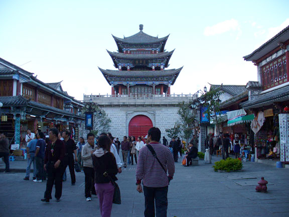

China Trav-E-Logs ©
Dali Email
November 5, 2005
Hi Folks,
 Writing you from the 800 year old walled town of Dali, in Yunnan province, China. This is one of the cities on the famous Burma Road, and not far from the area thought to be the legendary Shangri-La. Back in Kunming, we bought sweat shirts to keep warm, as the elevation now is about 5800 feet, and it gets down to the 40's at night. The highest mountain in the range above Dali is just over 12,000 feet -- tempting to climb, but takes two days according to one source.
The second is at "3 Pagodas", just down the road. This is part of a huge active Buddhist temple complex, and makes for some fascinating photography. As you can see, the weather has been perfect, with blue sky and a few white clouds. That lake in the background is Erhai Hu.
We've now been in China for almost three weeks, and it is remarkable how each region we go to has an entirely different character. Next we head back to Kunming, then down to Xishuanbana autonomous region before crossing into Laos. Hope everyone is safe and dancing up a storm.
I’m sitting in a very noisy bar at 1 AM on a Sunday night, drinking a glass of dry red wine. There are about 15 drinkers in here -- I’m the only Westerner. Ages of the other patrons seem to range from 20 to 30. One of them approaches me to apologize for the ruckus they are making, and we strike up a conversation. He is with six other college and business associates, visiting from Kunming for a weekend of partying and relaxation. They try to get together like this once or twice a year. He works at one of the largest banks in China. His English is pretty good, considering he has had plenty to drink!
Well, time to get back to the guest house and get some sleep. Another long day tomorrow.
Bill
| next:China Exit1 |
| back: Trav-E-Log 2005 | ||
| Bamboo Homes in S.E. Asia |